Losslessly Import Raw Material to AE/PR with Miraculous Plugin
Insta360 Plugin can be used in Adobe PR, AE and help importing the lossless video into editing software after installation.
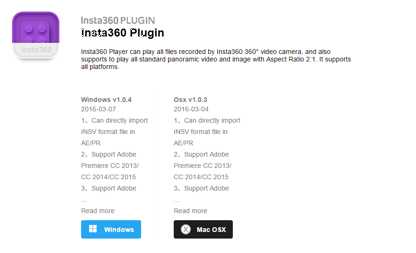
Installation tricks
MAC Osx system
Step 1: Download the plugin from the official website and then decompress the file
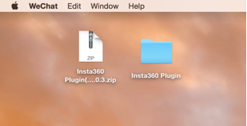
Step 2: Select the file based on the version of the software to decompress.
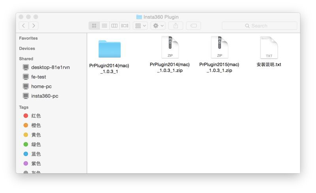 Step 3: Copy the selected and paste it on the clipboard
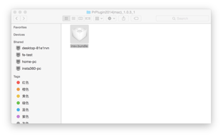
Step 4: Choose the "Go" folder
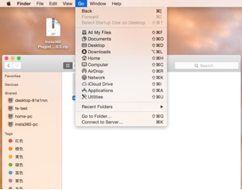 Step 5: Copy the path in the Installation Instruction
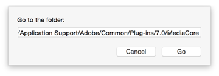
Step 6: Put the file into the selected folder
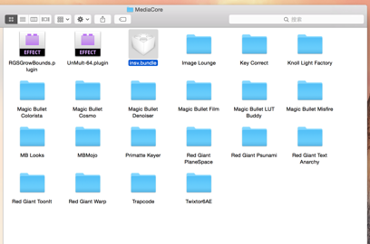 Step 7: Open AE or PR and then import the insv file directly into it
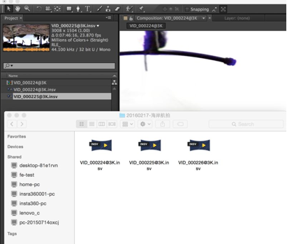 Step 8: Start editing
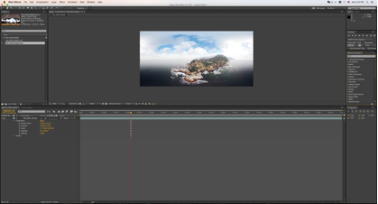
Windows system
Step 1: Decompress the file and install the application according to the version of your software
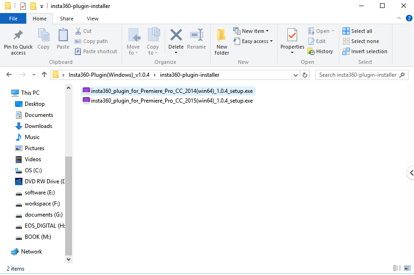 Step 2: Double click “Install”, and click “Next” without changing the default setting
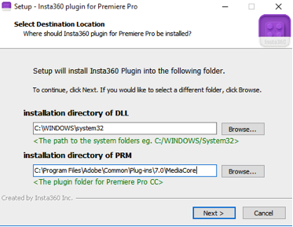 Step 3: After installation completed, open AE or PR, then import the insv file and start editing,
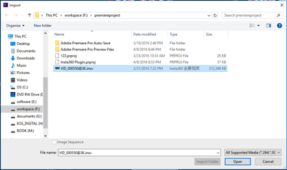
Step 4: If the insv material is accessible on the list after being exported, then it can be edited directly,
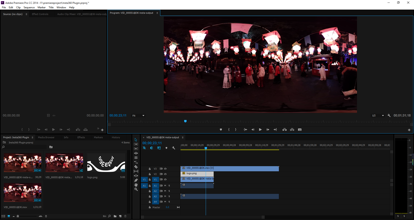 Tips: If the installed PR is of the green version, then users only need to copy insv.prm from the plugin installation folder and paste it to Plug-ins\Common under plugin folder for PR.